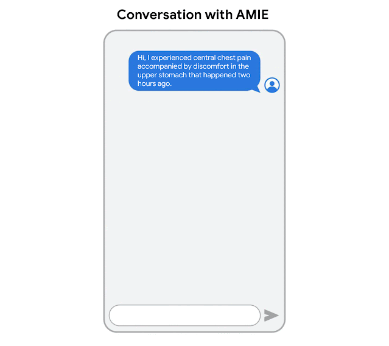
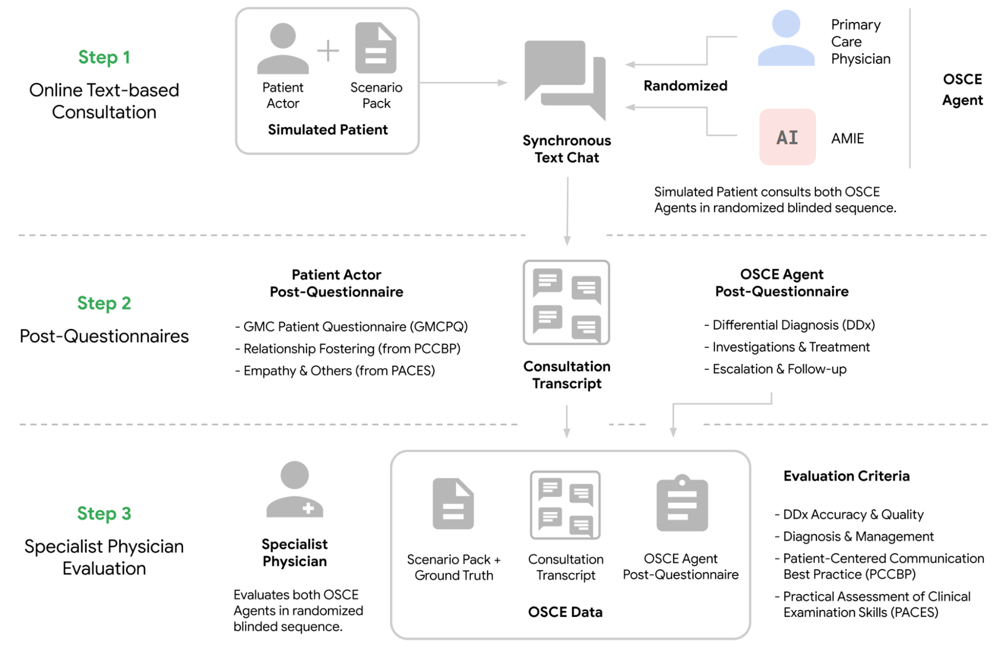
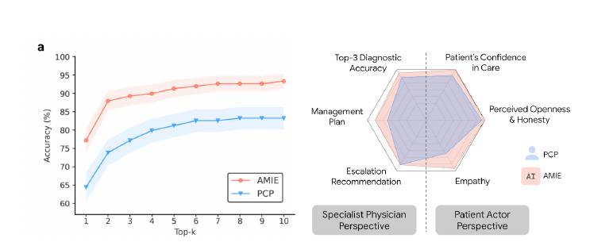
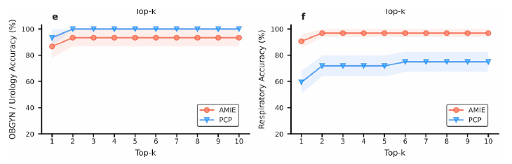
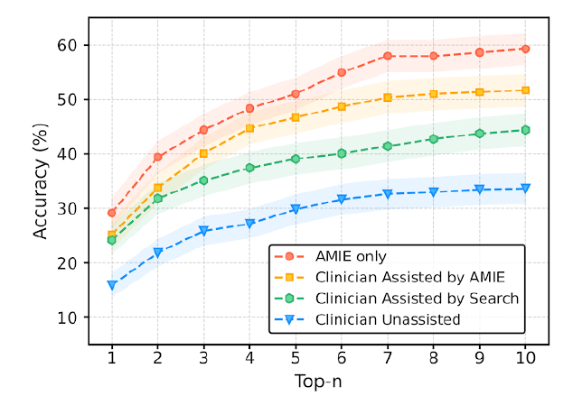

AMIE
در ژانویه ۲۰۲۴، شرکت گوگل از (AMIE (Articulate Medical Intelligence Explorer یک سیستم هوش مصنوعی تحقیقاتی مبتنی بر مدلهای زبانی بزرگ (LLMs)، در وبلاگ خود رونمایی کرد. همزمان، دو مقاله اولیه درباره این سیستم در arXiv منتشر شد که نسخههای نهایی آنها در مارس ۲۰۲۵ در مجله Nature به چاپ رسید. AMIE حاصل همکاری دو بخش تحقیقاتی گوگل، یعنی Google Research و Google DeepMind است. از زمان معرفی اولیه، گوگل در سه پست وبلاگی، یافتههای جدید و بهبودهای اعمالشده بر این سیستم را منتشر کرده است. این سیستم که بر پایه مدل زبانی چندمنظوره و عمومی PaLM-2 توسعه یافته، بهطور ویژه برای مکالمات بالینی، دریافت شرح حال بیماران، و استدلال تشخیصی بهینهسازی شده است. هدف اصلی آن ارتقای دسترسی، کیفیت و ثبات در خدمات بهداشتی و سلامت است.

مهمترین دستاوردهای سیستم AMIE
ایجاد یک محیط شبیهسازی شده برای مکالمات بالینی: این محیط مبتنی بر self-play طراحی شده و شامل مکانیزمهای بازخورد خودکار است که به مقیاسپذیری و تسریع فرآیند یادگیری AMIE در طیف گستردهای از تخصصهای پزشکی و سناریوهای مختلف کمک میکند.
بهبود دقت تشخیصی و کیفیت مکالمه از طریق استراتژی زنجیره استدلال (chain-of-reasoning): این روش در مرحله استنتاج (inference) به کار گرفته میشود و شامل سه مرحله است: تحلیل اطلاعات بیمار، فرمولبندی پاسخ و اقدام، و پالایش پاسخ برای ارائه تشخیص دقیقتر.
توسعه چارچوب ارزیابی آزمایشی (pilot evaluation rubric): این چارچوب شامل معیارهای پزشکمحور و بیمارمحور است و بر اساس استانداردهای بالینی معتبر مانند شیوههای ارتباط بیمارمحور (PCCBP)، معیارهای ارزیابی مهارتهای معاینه بالینی (PACES) و پرسشنامه بیمار شورای پزشکی عمومی بریتانیا (GMCPQ) توسعه یافته است.
اجرای یک مطالعه بالینی کنترلشده به سبک OSCE (Objective Structured Clinical Examination): این مطالعه بهصورت تصادفی، دوسوکور و متقاطع (crossover) طراحی شده است. در آن، ۱۵۹ سناریوی های موردی پزشکی از ارائهدهندگان خدمات درمانی در کانادا، بریتانیا و هند مورد بررسی قرار گرفت تا عملکرد AMIE در مقایسه با (PCPs (primary care physicians در مشاورههای متنی با بازیگران نقش بیمار Patient-actors ارزیابی شود. نهایتا عملکرد AMIE و پزشکان مراقبتهای اولیه PCPs از دیدگاه پزشکان متخصص و بیماران شبیهسازیشده ارزیابی شده است. این سناریوهای موردی پزشکی طیف گستردهای از تخصصهای پزشکی و بیماریها را پوشش میدادند.
- پزشکان مراقبتهای اولیه: ۲۰ پزشک دارای گواهینامه بورد، با سابقهای بین ۳ تا ۲۵ سال پس از دوره رزیدنتی، از هند و کانادا.
- بازیگران نقش بیمار: ترکیبی از ۲۰ نفر شامل دانشجویان پزشکی، رزیدنتها و پرستاران متخصص.
- پزشکان متخصص ارزیاب: گروهی متشکل از ۳۳ پزشک متخصص، شامل ۱۸ نفر از هند، ۱۲ نفر از آمریکای شمالی و ۳ نفر از بریتانیا.
- پزشکان مراقبتهای اولیه: ۲۰ پزشک دارای گواهینامه بورد، با سابقهای بین ۳ تا ۲۵ سال پس از دوره رزیدنتی، از هند و کانادا.

نتایج ارزیابی مطالعه بالینی کنترلشده نشان داد که سیستم AMIE در مقایسه با پزشکان مراقبتهای اولیه PCPs، از دقت تشخیصی بالاتر و عملکرد بهتری در اغلب جنبههای ارزیابی برخوردار بوده است. علاوه بر این، در زمینه همدلی و مهارتهای ارتباطی نیز عملکرد بهتری نشان داد. بر اساس ارزیابی پزشکان متخصص، AMIE در ۳۰ مورد از ۳۲ معیار برتری داشته و از دیدگاه بیماران شبیهسازیشده نیز در ۲۵ مورد از ۲۶ معیار، بهتر ارزیابی شده است. این یافتهها بیانگر آن است که AMIE در استخراج اطلاعات مرتبط در طول مشاورههای شبیهسازیشده به اندازه پزشکان مراقبتهای اولیه ماهر بوده و در تفسیر این اطلاعات به منظور ارائه تشخیصهای افتراقی دقیقتر و جامعتر، عملکرد بهتری داشته است.
این سیستم همچنین در تشخیصهای افتراقی، با در نظر گرفتن k مقدار برتر از ۱ تا ۱۰، در مقایسه با پزشکان مراقبتهای اولیه، هنگام تطبیق با تشخیص واقعی، دقت بالاتری نشان داده است.

در ارزیابیها، دقت تشخیص افتراقی DDx به دست آمده توسط AMIE و پزشکان مراقبتهای اولیه PCPs در شش تخصص پزشکی مورد بررسی قرار گرفت. نتایج نشان داد که عملکرد AMIE در تمامی تخصصها با عملکرد PCP مطابقت داشته یا از آن بهتر بوده است، به جز در تخصصهای زنان و زایمان/اورولوژی. بیشترین بهبود عملکرد در تخصصهای داخلی و ریه مشاهده شده است.

همچنین در مطالعه ای تکمیلی قابلیت AMIE برای تولید تشخیص افتراقی DDx، چه به تنهایی و چه به عنوان ابزاری کمکی برای پزشکان بررسی شده است. این ارزیابی بر روی ۳۰۲ مورد چالشبرانگیز پزشکی واقعی که از گزارشهای کنفرانسهای بالینی پاتولوژیک (CPCs) مجله پزشکی نیوانگلند (NEJM) جمعآوری شده بودند، انجام شد.
یافتههای کلیدی این مطالعه عبارتند از:
AMIE به تنهایی عملکردی برتر از پزشکان بدون کمک در تولید لیستهای DDx نشان داد. برای مثال، دقت Top-10 برای AMIE به تنهایی ۵۹.۱٪ بود، در حالی که برای پزشکان بدون کمک ۳۳.۶٪ بود .
پزشکانی که توسط AMIE کمک شدند، کیفیت تشخیص افتراقی بالاتری داشتند (۵۱.۷٪ مقابل ۳۶.۱٪ برای پزشکان بدون کمک و ۴۴.۴٪ برای پزشکان با کمک جستجو).
پزشکانی که توسط AMIE کمک میشدند، لیستهای تشخیصی افتراقی جامعتری ارائه کردند نسبت به کسانی که بدون کمک AMIE بودند. این مطالعه نشان میدهد که AMIE پتانسیل بهبود استدلال تشخیصی و دقت پزشکان در موارد چالشبرانگیز را دارد. همچنین پیشنهاد میکند که AMIE میتواند به توانمندسازی پزشکان و گسترش دسترسی بیماران به تخصص در سطح متخصصان کمک کند.

مطالعه انجام شده روی AMIE دارای محدودیتهای مهمی شامل موارد زیر است:
رابط کاربری ناآشنا برای پزشکان: پزشکان شرکتکننده از یک رابط متنی استفاده کردند که در عمل بالینی رایج نیست.
ماهیت تحقیقاتی AMIE: این سیستم هنوز یک نمونه اولیه تحقیقاتی است و برای استفاده عمومی نیازمند پژوهشهای گستردهتر است.
چالشهای کاربردی در دنیای واقعی: موضوعاتی مانند عدالت در سلامت، حفظ حریم خصوصی، عملکرد تحت محدودیتهای عملی و ایمنی فناوری باید مورد بررسی دقیق قرار گیرند.
عدم شبیهسازی کامل محیط بالینی: ارزیابیهای اولیه، تعاملات واقعی پزشک-بیمار را کاملاً شبیهسازی نمیکنند.
چالشهای بازآفرینی ویژگیهای یک پزشک ماهر در هوش مصنوعی: ارتباط، اعتماد، تصمیمگیری حرفهای و ایمنی مواردی هستند که برای پیادهسازی در هوش مصنوعی نیازمند مطالعات گستردهتر هستند.
نتیجهگیری: در حالی که نتایج اولیه AMIE امیدوارکننده هستند، استفاده عملی از این سیستم در محیطهای درمانی واقعی نیازمند پژوهشهای گستردهتر و ارزیابیهای دقیقتر است.
لینک به منابع:
https://www.nature.com/articles/s41586-025-08866-7
https://www.nature.com/articles/s41586-025-08869-4
مطالعات جدید و بهبودهای اعمالشده:
https://research.google/blog/advancing-amie-towards-specialist-care-and-real-world-validation/